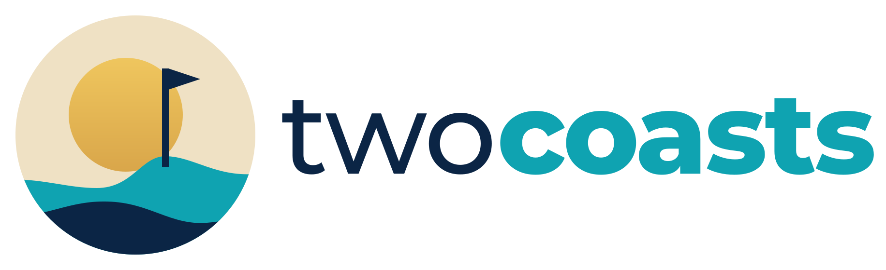

Today
1,240
Card with a stat. Up 3.2%
Watchlist
18
Warm sand card. New
Alerts
2
Needs attention. Action
Table
| Market | Coast | Price | 24h |
|---|---|---|---|
| Example A | Dubai | 102.40 | +1.8% |
| Example B | Thailand | 36.10 | -0.6% |

Dubai · Thailand
Hero copy in Inter on the coast gradient. Buttons below show the primary, gold and secondary styles.
Get started Learn moreToday
Card with a stat. Up 3.2%
Watchlist
Warm sand card. New
Alerts
Needs attention. Action
| Market | Coast | Price | 24h |
|---|---|---|---|
| Example A | Dubai | 102.40 | +1.8% |
| Example B | Thailand | 36.10 | -0.6% |